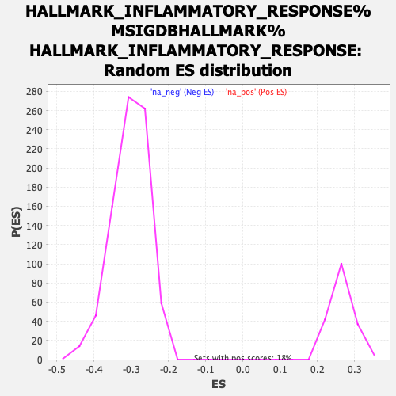

| | | Dataset | ranked_tn_list |
| Phenotype | NoPhenotypeAvailable |
| Upregulated in class | na_pos |
| GeneSet | HALLMARK_INFLAMMATORY_RESPONSE%MSIGDBHALLMARK%HALLMARK_INFLAMMATORY_RESPONSE |
| Enrichment Score (ES) | 0.5528467 |
| Normalized Enrichment Score (NES) | 2.0881047 |
| Nominal p-value | 0.0 |
| FDR q-value | 0.0021594034 |
| FWER p-Value | 0.024 |
Table: GSEA Results Summary
 Fig 1: Enrichment plot: HALLMARK_INFLAMMATORY_RESPONSE%MSIGDBHALLMARK%HALLMARK_INFLAMMATORY_RESPONSE
Fig 1: Enrichment plot: HALLMARK_INFLAMMATORY_RESPONSE%MSIGDBHALLMARK%HALLMARK_INFLAMMATORY_RESPONSE
Profile of the Running ES Score & Positions of GeneSet Members on the Rank Ordered List
| SYMBOL | RANK IN GENE LIST | RANK METRIC SCORE | RUNNING ES | CORE ENRICHMENT | | 1 | KCNJ2 | 33 | 11.102 | 0.0353 | Yes |
| 2 | PTPRE | 69 | 9.997 | 0.0668 | Yes |
| 3 | TIMP1 | 80 | 9.751 | 0.0989 | Yes |
| 4 | LY6E | 105 | 9.384 | 0.1290 | Yes |
| 5 | ICAM4 | 109 | 9.310 | 0.1600 | Yes |
| 6 | CD55 | 185 | 8.154 | 0.1830 | Yes |
| 7 | EREG | 191 | 8.104 | 0.2099 | Yes |
| 8 | AHR | 236 | 7.479 | 0.2324 | Yes |
| 9 | SCN1B | 449 | 5.802 | 0.2395 | Yes |
| 10 | ABCA1 | 473 | 5.674 | 0.2572 | Yes |
| 11 | ADM | 505 | 5.551 | 0.2740 | Yes |
| 12 | EMP3 | 556 | 5.297 | 0.2889 | Yes |
| 13 | HRH1 | 581 | 5.183 | 0.3049 | Yes |
| 14 | IRAK2 | 626 | 4.949 | 0.3189 | Yes |
| 15 | CCL20 | 664 | 4.783 | 0.3328 | Yes |
| 16 | PLAUR | 740 | 4.487 | 0.3434 | Yes |
| 17 | TNFAIP6 | 784 | 4.340 | 0.3555 | Yes |
| 18 | HAS2 | 787 | 4.324 | 0.3699 | Yes |
| 19 | SLC7A2 | 898 | 3.958 | 0.3768 | Yes |
| 20 | ROS1 | 935 | 3.828 | 0.3875 | Yes |
| 21 | DCBLD2 | 1080 | 3.377 | 0.3904 | Yes |
| 22 | LYN | 1105 | 3.326 | 0.4002 | Yes |
| 23 | CDKN1A | 1150 | 3.236 | 0.4085 | Yes |
| 24 | RIPK2 | 1186 | 3.143 | 0.4170 | Yes |
| 25 | OLR1 | 1245 | 2.992 | 0.4236 | Yes |
| 26 | IL18 | 1296 | 2.887 | 0.4304 | Yes |
| 27 | CLEC5A | 1347 | 2.803 | 0.4369 | Yes |
| 28 | HIF1A | 1382 | 2.747 | 0.4441 | Yes |
| 29 | SPHK1 | 1421 | 2.680 | 0.4509 | Yes |
| 30 | EBI3 | 1432 | 2.670 | 0.4593 | Yes |
| 31 | MSR1 | 1491 | 2.544 | 0.4644 | Yes |
| 32 | MMP14 | 1544 | 2.439 | 0.4696 | Yes |
| 33 | GNA15 | 1555 | 2.417 | 0.4771 | Yes |
| 34 | TNFRSF1B | 1562 | 2.399 | 0.4848 | Yes |
| 35 | PCDH7 | 1622 | 2.306 | 0.4891 | Yes |
| 36 | MARCO | 1636 | 2.280 | 0.4960 | Yes |
| 37 | INHBA | 1647 | 2.256 | 0.5030 | Yes |
| 38 | CCL17 | 1737 | 2.122 | 0.5049 | Yes |
| 39 | C5AR1 | 1982 | 1.781 | 0.4967 | Yes |
| 40 | SERPINE1 | 2015 | 1.751 | 0.5007 | Yes |
| 41 | CX3CL1 | 2035 | 1.730 | 0.5054 | Yes |
| 42 | CCL22 | 2046 | 1.712 | 0.5105 | Yes |
| 43 | ADORA2B | 2082 | 1.676 | 0.5141 | Yes |
| 44 | C3AR1 | 2123 | 1.640 | 0.5173 | Yes |
| 45 | NOD2 | 2147 | 1.622 | 0.5214 | Yes |
| 46 | LDLR | 2257 | 1.522 | 0.5201 | Yes |
| 47 | NLRP3 | 2291 | 1.495 | 0.5232 | Yes |
| 48 | RGS1 | 2333 | 1.458 | 0.5257 | Yes |
| 49 | IFNGR2 | 2335 | 1.456 | 0.5306 | Yes |
| 50 | P2RX7 | 2348 | 1.446 | 0.5347 | Yes |
| 51 | LAMP3 | 2392 | 1.414 | 0.5370 | Yes |
| 52 | AXL | 2407 | 1.400 | 0.5408 | Yes |
| 53 | LIF | 2412 | 1.396 | 0.5453 | Yes |
| 54 | CYBB | 2427 | 1.377 | 0.5491 | Yes |
| 55 | CD40 | 2442 | 1.365 | 0.5528 | Yes |
| 56 | CCL7 | 2575 | 1.273 | 0.5494 | No |
| 57 | P2RX4 | 2606 | 1.251 | 0.5519 | No |
| 58 | P2RY2 | 2858 | 1.077 | 0.5409 | No |
| 59 | RELA | 2981 | 1.004 | 0.5371 | No |
| 60 | ATP2C1 | 3033 | 0.974 | 0.5374 | No |
| 61 | CSF3 | 3063 | 0.952 | 0.5389 | No |
| 62 | ITGB8 | 3093 | 0.932 | 0.5404 | No |
| 63 | EDN1 | 3105 | 0.926 | 0.5428 | No |
| 64 | PSEN1 | 3147 | 0.903 | 0.5435 | No |
| 65 | CCL2 | 3168 | 0.895 | 0.5453 | No |
| 66 | IL6 | 3243 | 0.860 | 0.5439 | No |
| 67 | PTGER4 | 3475 | 0.736 | 0.5329 | No |
| 68 | CCRL2 | 3553 | 0.702 | 0.5308 | No |
| 69 | F3 | 3695 | 0.651 | 0.5248 | No |
| 70 | KIF1B | 3718 | 0.642 | 0.5256 | No |
| 71 | CD82 | 3756 | 0.624 | 0.5256 | No |
| 72 | HBEGF | 3828 | 0.602 | 0.5235 | No |
| 73 | PIK3R5 | 3881 | 0.582 | 0.5224 | No |
| 74 | PTGER2 | 4017 | 0.540 | 0.5163 | No |
| 75 | TLR1 | 4046 | 0.531 | 0.5165 | No |
| 76 | OSMR | 4158 | 0.497 | 0.5117 | No |
| 77 | FPR1 | 4221 | 0.477 | 0.5097 | No |
| 78 | TPBG | 4319 | 0.454 | 0.5056 | No |
| 79 | IL18R1 | 4389 | 0.434 | 0.5030 | No |
| 80 | MYC | 4428 | 0.423 | 0.5022 | No |
| 81 | TNFRSF9 | 4586 | 0.382 | 0.4943 | No |
| 82 | IL2RB | 4634 | 0.371 | 0.4929 | No |
| 83 | OSM | 4653 | 0.366 | 0.4930 | No |
| 84 | LCP2 | 4725 | 0.347 | 0.4901 | No |
| 85 | SELE | 4792 | 0.331 | 0.4873 | No |
| 86 | IL1R1 | 4907 | 0.305 | 0.4817 | No |
| 87 | BDKRB1 | 5146 | 0.252 | 0.4687 | No |
| 88 | CD14 | 5149 | 0.251 | 0.4694 | No |
| 89 | CXCL9 | 5261 | 0.230 | 0.4637 | No |
| 90 | STAB1 | 5395 | 0.202 | 0.4567 | No |
| 91 | PDPN | 5411 | 0.199 | 0.4565 | No |
| 92 | IL10RA | 5412 | 0.198 | 0.4571 | No |
| 93 | ADRM1 | 5692 | 0.147 | 0.4414 | No |
| 94 | PDE4B | 5768 | 0.135 | 0.4375 | No |
| 95 | IL1A | 5798 | 0.130 | 0.4362 | No |
| 96 | SLC31A2 | 5841 | 0.123 | 0.4342 | No |
| 97 | SLC11A2 | 5937 | 0.108 | 0.4290 | No |
| 98 | CCL24 | 5943 | 0.108 | 0.4291 | No |
| 99 | IL10 | 6174 | 0.075 | 0.4159 | No |
| 100 | KCNA3 | 6248 | 0.067 | 0.4119 | No |
| 101 | MEFV | 6417 | 0.048 | 0.4023 | No |
| 102 | TAPBP | 6445 | 0.045 | 0.4009 | No |
| 103 | ITGB3 | 6503 | 0.038 | 0.3977 | No |
| 104 | TACR1 | 6514 | 0.036 | 0.3972 | No |
| 105 | CCL5 | 6570 | 0.028 | 0.3941 | No |
| 106 | IL7R | 6621 | 0.022 | 0.3913 | No |
| 107 | NMI | 6661 | 0.017 | 0.3891 | No |
| 108 | ATP2B1 | 6677 | 0.015 | 0.3882 | No |
| 109 | SEMA4D | 6908 | -0.008 | 0.3749 | No |
| 110 | CSF1 | 6977 | -0.015 | 0.3710 | No |
| 111 | CCR7 | 7029 | -0.021 | 0.3681 | No |
| 112 | CXCR6 | 7143 | -0.033 | 0.3616 | No |
| 113 | NFKB1 | 7326 | -0.056 | 0.3512 | No |
| 114 | MEP1A | 7362 | -0.062 | 0.3494 | No |
| 115 | IFNAR1 | 7400 | -0.067 | 0.3474 | No |
| 116 | EIF2AK2 | 7424 | -0.069 | 0.3463 | No |
| 117 | PTGIR | 7528 | -0.081 | 0.3406 | No |
| 118 | NPFFR2 | 7568 | -0.087 | 0.3386 | No |
| 119 | IL12B | 7724 | -0.108 | 0.3300 | No |
| 120 | GNAI3 | 7867 | -0.126 | 0.3221 | No |
| 121 | LCK | 7981 | -0.142 | 0.3160 | No |
| 122 | CD48 | 8117 | -0.158 | 0.3087 | No |
| 123 | GPR132 | 8190 | -0.167 | 0.3051 | No |
| 124 | SELL | 8246 | -0.175 | 0.3024 | No |
| 125 | SLAMF1 | 8284 | -0.182 | 0.3009 | No |
| 126 | AQP9 | 8286 | -0.182 | 0.3015 | No |
| 127 | CD69 | 8289 | -0.183 | 0.3020 | No |
| 128 | GP1BA | 8529 | -0.217 | 0.2888 | No |
| 129 | RTP4 | 8873 | -0.274 | 0.2697 | No |
| 130 | SLC31A1 | 8978 | -0.292 | 0.2646 | No |
| 131 | GABBR1 | 9039 | -0.304 | 0.2622 | No |
| 132 | IRF7 | 9432 | -0.369 | 0.2406 | No |
| 133 | NDP | 9494 | -0.379 | 0.2383 | No |
| 134 | IL1B | 9697 | -0.415 | 0.2279 | No |
| 135 | IL18RAP | 9782 | -0.430 | 0.2245 | No |
| 136 | BST2 | 9845 | -0.441 | 0.2224 | No |
| 137 | LTA | 9949 | -0.466 | 0.2179 | No |
| 138 | IFITM1 | 9950 | -0.466 | 0.2195 | No |
| 139 | ATP2A2 | 9961 | -0.467 | 0.2205 | No |
| 140 | IRF1 | 10058 | -0.488 | 0.2165 | No |
| 141 | MXD1 | 10305 | -0.543 | 0.2040 | No |
| 142 | CMKLR1 | 10615 | -0.617 | 0.1881 | No |
| 143 | NFKBIA | 10817 | -0.664 | 0.1786 | No |
| 144 | PROK2 | 10953 | -0.705 | 0.1731 | No |
| 145 | IL15 | 11028 | -0.732 | 0.1713 | No |
| 146 | CALCRL | 11115 | -0.751 | 0.1688 | No |
| 147 | SLC1A2 | 11223 | -0.782 | 0.1652 | No |
| 148 | CSF3R | 11230 | -0.783 | 0.1675 | No |
| 149 | SRI | 11837 | -0.961 | 0.1354 | No |
| 150 | ICOSLG | 11965 | -1.005 | 0.1314 | No |
| 151 | RAF1 | 12049 | -1.030 | 0.1300 | No |
| 152 | KLF6 | 12170 | -1.077 | 0.1266 | No |
| 153 | SLC7A1 | 12323 | -1.128 | 0.1216 | No |
| 154 | IL15RA | 12378 | -1.155 | 0.1223 | No |
| 155 | NMUR1 | 12658 | -1.271 | 0.1103 | No |
| 156 | OPRK1 | 12808 | -1.341 | 0.1061 | No |
| 157 | CXCL11 | 12811 | -1.341 | 0.1105 | No |
| 158 | BTG2 | 13137 | -1.503 | 0.0966 | No |
| 159 | TNFSF10 | 13764 | -1.842 | 0.0664 | No |
| 160 | RNF144B | 13877 | -1.922 | 0.0663 | No |
| 161 | FFAR2 | 14192 | -2.104 | 0.0551 | No |
| 162 | ACVR2A | 14797 | -2.545 | 0.0284 | No |
| 163 | ACVR1B | 15421 | -3.248 | 0.0031 | No |
| 164 | FZD5 | 16365 | -4.776 | -0.0358 | No |
| 165 | GPC3 | 16492 | -5.077 | -0.0261 | No |
| 166 | TLR3 | 16644 | -5.505 | -0.0165 | No |
| 167 | RGS16 | 16758 | -5.987 | -0.0030 | No |
| 168 | SLC4A4 | 17322 | -11.040 | 0.0013 | No |
Table: GSEA details [plain text format]

Fig 2: HALLMARK_INFLAMMATORY_RESPONSE%MSIGDBHALLMARK%HALLMARK_INFLAMMATORY_RESPONSE: Random ES distribution
Gene set null distribution of ES for HALLMARK_INFLAMMATORY_RESPONSE%MSIGDBHALLMARK%HALLMARK_INFLAMMATORY_RESPONSE